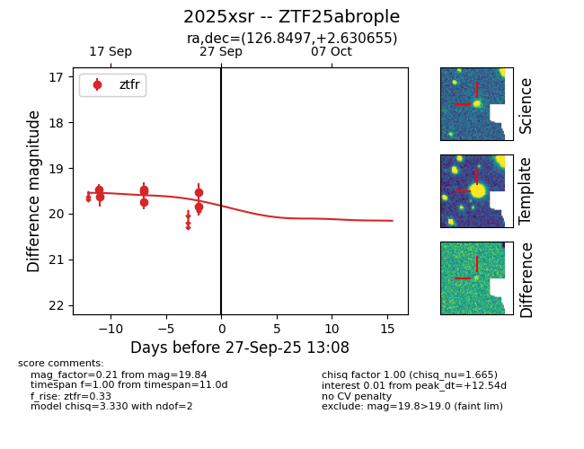
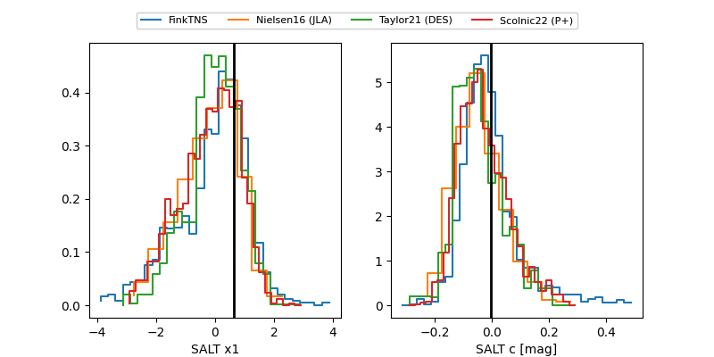

FINK: ZTF25abrople
Lasair: ZTF25abrople
ALeRCE: ZTF25abrople
TNS: 2025xsr
YSE: 2025xsr
ZTF25abrople (ztf,fink)
2025xsr (tns,yse)
equatorial (ra, dec) = (126.8497,+2.63065)
galactic (l, b) = (221.9197,+22.48239)


last ztfr=19.84
7 ztfr detections